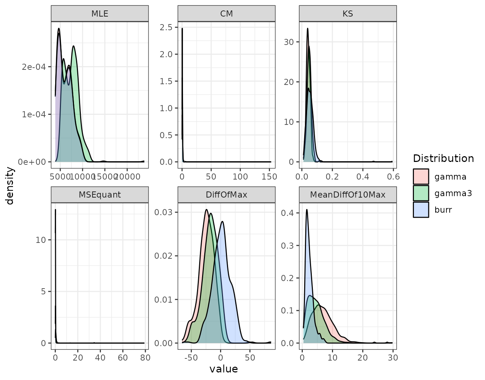
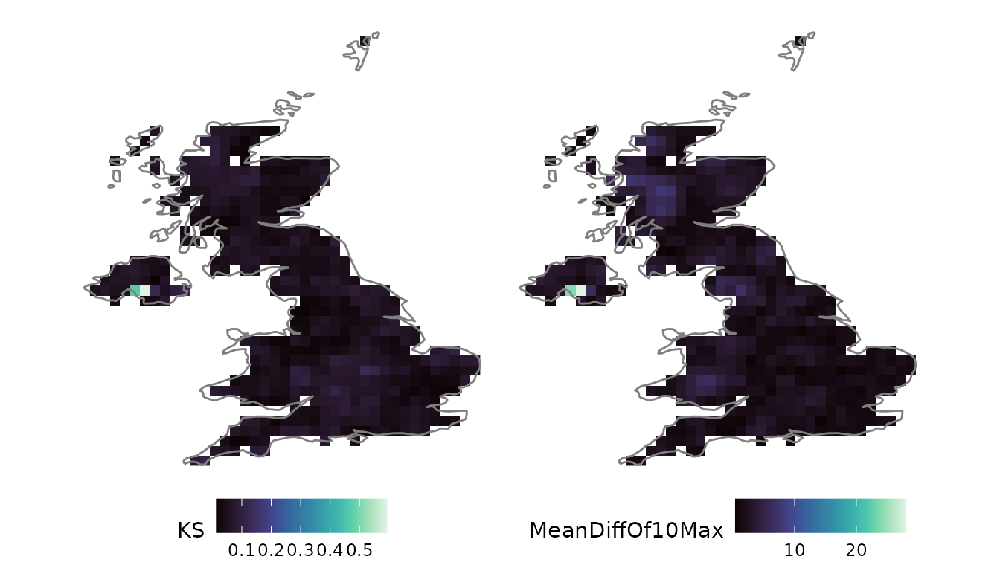
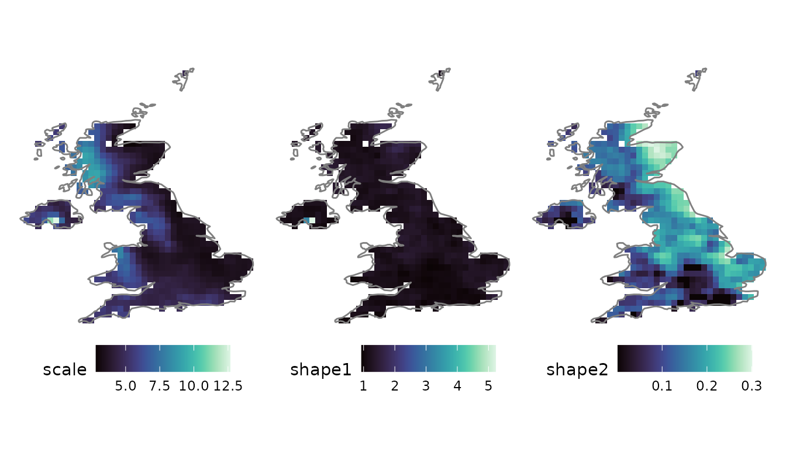
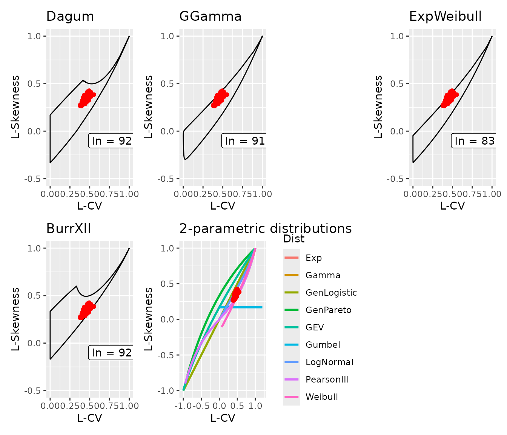
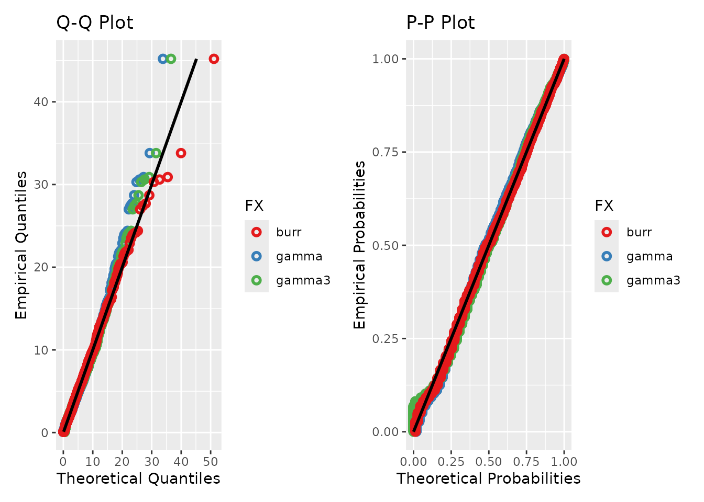

Distribution fitting with L-moments
Source:vignettes/articles/distribution-fitting.Rmd
distribution-fitting.Rmd1. Why L-moments?
Fitting a marginal distribution is central to hydrological risk assessment and to parameterising stochastic simulators. anyFit performs this fitting through the method of L-moments rather than Maximum Likelihood Estimation (MLE), for two reasons of particular relevance to hydroclimatic data:
- Robustness. L-moments are linear combinations of ordered values, so they are far less sensitive to outliers than product moments, an advantage for the skewed, heavy-tailed distributions typical of precipitation.
- No i.i.d. assumption. MLE assumes independent, identically distributed observations. Hydroclimatic series are autocorrelated, which biases MLE; L-moment estimators do not rely on independence.
Estimation is performed in two ways. For distributions whose L-moments have a closed form (Gamma, Weibull, Gumbel, Log-Normal, GEV, …) the analytical equations are used. For flexible multi-parameter families without closed-form L-moments (Generalised Gamma, Burr type-XII, Dagum, Exponentiated Weibull), anyFit performs a fast bounded optimisation (L-BFGS-B), initialised from pre-computed tables that span the feasible L-ratio space, so that no user-supplied initial values are needed.
Supported distributions
| Distribution | Parameters | R designation |
|---|---|---|
| Exponential | location, scale | exp |
| Rayleigh | location, scale | rayleigh |
| Gamma | scale, shape | gamma |
| Normal | mean, sd | norm |
| Log-Normal | scale, shape | lognorm |
| Generalised Logistic | location, scale, shape | genlogi |
| 3-parameter Weibull | location, scale, shape | weibull |
| Gumbel | location, scale | gumbel |
| 3-parameter Gamma (Pearson III) | location, scale, shape | gamma3 |
| Generalised Extreme Value | location, scale, shape | gev |
| Generalised Pareto | location, scale, shape | gpd |
| Generalised Gamma | scale, shape1, shape2 | gengamma |
| Generalised Gamma with location | location, scale, shape1, shape2 | gengamma_loc |
| Burr type-XII | scale, shape1, shape2 | burr |
| Dagum | scale, shape1, shape2 | dagum |
| Exponentiated Weibull | scale, shape1, shape2 | expweibull |
Each family follows the standard R
d/p/q/r notation
(dburr, pgev, qgamma3,
rdagum, …), and each has a matching fitlm_
fitter (fitlm_burr(), fitlm_gev(), …).
2. Fitting across a grid
We load the bundled E-OBS daily rainfall, clipped to the UK, and fit
several candidates at every grid cell with fitlm_nc().
Setting ignore_zeros = TRUE excludes dry days so that the
fit describes wet-day rainfall.
f <- system.file("extdata", "rr_ens_mean_0.25deg_reg_2011-2022_v27.0e.nc",
package = "anyFit")
uk_name <- "U.K. of Great Britain and Northern Ireland"
rain_uk <- nc2xts(f, varname = "rr", country = uk_name)
candidates <- c("gamma", "gamma3", "burr")
fits <- fitlm_nc(rain_uk, ignore_zeros = TRUE, candidates = candidates)3. Comparing the candidates
fitlm_nc() returns a summary of the goodness-of-fit
measures as densities over all grid cells. These measures include the
negative log-likelihood (MLE), the Cramér–von Mises (CM) and
Kolmogorov–Smirnov (KS) statistics, the mean squared error of quantiles
(MSEquant), the percentage difference of the maximum (DiffOfMax) and the
mean difference of the ten largest values (MeanDiffOf10Max). The
densities are a visual aid for judging which distribution performs best
across most of the domain, rather than a formal test.
fits$gof_plots
The upper-tail metrics (DiffOfMax,
MeanDiffOf10Max) are the relevant diagnostics when extremes
are of interest. The flexible Burr XII typically captures the tail
better than the two-parameter Gamma, which can be confirmed spatially,
since fitlm_nc() also returns per-cell goodness-of-fit
rasters:
nc_ggplot(fits$fit_results$burr$raster_GoF[[c("KS", "MeanDiffOf10Max")]],
viridis.option = "mako") &
borders("world", regions = "UK")
4. Mapping the fitted parameters
For each candidate, the fitted parameters are returned as a raster, one layer per parameter. The Burr XII scale and two shape parameters map as:
nc_ggplot(fits$fit_results$burr$raster_params, viridis.option = "mako") &
borders("world", regions = "UK")
5. L-ratio diagnostic diagrams
Every distribution occupies a characteristic region of L-skewness / L-kurtosis space. Plotting the sampled L-ratios against a distribution’s theoretical support provides a direct means of assessing whether that distribution can describe the data: if the sample ratios fall outside the support, the distribution cannot fit, regardless of its parameters.
lmom_stats() computes the sample L-moments per cell, and
LRatio_check() places them on the diagram for each
supported flexible family.
ts_lmoms <- lmom_stats(rain_uk, ignore_zeros = TRUE)
lcheck <- LRatio_check(ts_lmoms)
lcheck$multi_plots
Individual diagrams are also available,
e.g. lcheck$distributions$BurrXII$plot.
6. Single-series fitting and diagnostics
For an individual series, fitlm_multi() fits a list of
candidates and returns the fitted parameters, a goodness-of-fit table,
and Q–Q / P–P diagnostic plots. A perfect fit falls on the 1:1 line. We
extract the London grid cell and compare three candidates.
london <- nc2xts_nn(f, varname = "rr", coords = data.frame(x = -0.1278, y = 51.5074))
colnames(london) <- "London"
fit_london <- fitlm_multi(london, candidates = list("gamma", "gamma3", "burr"),
ignore_zeros = TRUE)
fit_london$diagnostics
The goodness-of-fit summary tabulates the same metrics as the gridded densities, here as a single column per candidate:
round(fit_london$GoF_summary, 3)
#> gamma gamma3 burr
#> MLE 4299.341 5689.598 4286.447
#> CM 0.290 0.406 0.141
#> KS 0.041 0.055 0.026
#> MSEquant 0.397 0.223 0.038
#> DiffOfMax -31.457 -26.206 -3.028
#> MeanDiffOf10Max 5.792 4.179 1.2577. See also
-
vignette("gridded-workflow"): extreme value analysis with the GEV, using the samefitlm_nc()machinery on annual maxima. -
vignette("point-seasonal"): fitting distributions per calendar month to capture seasonality withfitlm_monthly().